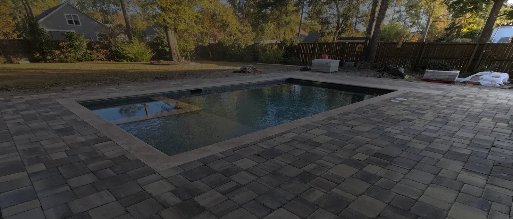

Cool Deck, Microcement, Tile, or Replace It?

It Comes Down to One Thing
A pool deck either gets resurfaced or replaced, and the honest answer depends on one thing: whether what is under the surface is still sound.

Resurface or Replace?
Resurfacing works if the deck is structurally OK. If it is cracking and settling, that is a base problem, and a new coating over a moving slab fails the same way the last one did.
Why decks fail here is usually poor base preparation and compaction — very often the backfill from the pool dig-out, which is poor dirt that never got compacted properly.
A new concrete install runs about $12 per square foot depending on the job, with removing the old concrete extra.
What We Resurface With
We use cool deck and microcement, or lay tile over the existing slab. Any of them can be done on a sound deck.
- Cool deck is the textured coating built for pool surrounds. It stays cooler underfoot than bare concrete and gives grip where people walk wet.
- Microcement is the smooth, seamless, modern finish — the same family of finish we use on outdoor kitchens and fireplaces, so a deck and a kitchen can be finished to match.
- Tile laid over the slab is a third look and feel again.
Cool deck is the most affordable. Microcement and tile are a different style, look and feel. Cost depends on the condition of the deck and which finish you want.
Prep is what decides whether a resurface lasts. Whether tile or a coating is going on top, the slab has to be cleaned and any coating that is failing stripped off. Resurfacing failures we get called to fix are almost always a coating applied over something that was not ready for it.
The coping and the doors take extra care. The coping may need to be removed and replaced.

If You Are Replacing It
The material decision runs the same way as any hardscape:
- Travertine — the most expensive, the most elegant, and it stays fairly cool. It is porous, so it is higher maintenance and wants sealing. Everything heats up in direct sun in our summers, travertine included.
- Pavers — vary by product, with a huge range of looks.
- Pavers and artificial turf — pavers set in a diamond pattern with turf between them. A usable, low-maintenance deck that softens the pool surround so it is not all stone or concrete.
- Salt-void concrete — the cheapest, with a texture that suits a coastal house.
Whatever goes on top, the base gets built properly underneath and the drainage planned, including a channel drain where the deck meets the house.
For what we charge and how the work runs, see pool decks.
Frequently Asked Questions
Should I resurface or replace my pool deck?
Resurfacing works if the deck is structurally sound. Cracking and settling mean the base has failed, and a coating over a moving slab will fail the same way.
What do you resurface pool decks with?
Cool deck, microcement, or tile over the existing slab. Cool deck is the textured coating made for pool surrounds, stays cooler underfoot and is the most affordable; microcement gives a smooth seamless modern finish that can match a kitchen or fireplace; tile is a different look and feel again.
Why do pool decks crack in Charleston?
Poor base preparation and compaction, very often the backfill from the pool excavation, which is poor dirt that was not compacted well enough.
What does a new pool deck cost?
Concrete installation is around $12 per square foot depending on the job, and removing the old concrete is extra. Coating cost depends on the deck condition and which coating you choose.
Is travertine cooler than concrete?
It stays fairly cool and it is the most elegant option, but everything heats up in direct sun in our summers. It is also porous, so it needs sealing and more maintenance.
Can you tile over an existing pool deck?
Yes, if the slab is sound. It has to be cleaned and any failing coating stripped first, and the coping and doors take extra care: the coping may need to be removed and replaced.
See It Built
Projects where we put this into practice.


Planning a Project of Your Own?
See everything we design and build, or get in touch to talk through your ideas with Doug and Zach.